“Just this side of heaven is a place called Rainbow Bridge.”
“When an animal dies that has been especially close to someone here, that pet goes to Rainbow Bridge. There are meadows and hills for all of
our special friends so they can run and play together. There is plenty of food, water and sunshine, and our friends are warm and comfortable.
All the animals who had been ill and old are restored to health and vigor. Those who were hurt or maimed are made whole and strong again,
just as we remember them in our dreams of days and times gone by. The animals are happy and content, except for one small thing; they each
miss someone very special to them, who had to be left behind.
They all run and play together, but the day comes when one suddenly stops and looks into the distance. His bright eyes are intent. His eager
body quivers. Suddenly he begins to run from the group, flying over the green grass, his legs carrying him faster and faster.
You have been spotted, and when you and your special friend finally meet, you cling together in joyous reunion, never to be parted again. The
happy kisses rain upon your face; your hands again caress the beloved head, and you look once more into the trusting eyes of your pet, so long
gone from your life but never absent from your heart.
Then you cross Rainbow Bridge together….”
– Author unknown
Losing a rescue is never easy, but we are comforted by the thought that they are now in a better place, free from pain and suffering. And that even during their last days,
they knew what it felt like to be loved and to be cared for. In Loving Memory, we honor our rescues who have passed and who have all touched us deeply with their will to live.
This is why we do what we do: IT’S FOR ALL OF THEM.
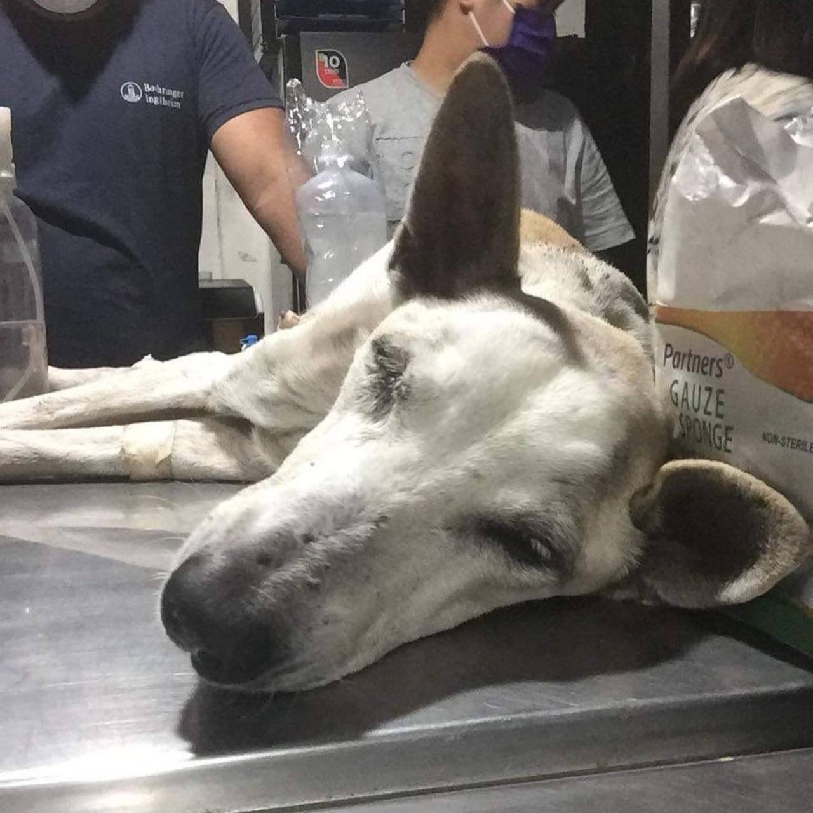
TOOTSIE - March 5, 2021
Tootsie was a Senior Dog, left to suffer and die because owner does not have the means to send her to the vet. She was left to die, suffering so much by the street, in so much pain, because they said, she was gonna die anyway. She was suffering from organ failure and pyometra, she was in really bad shape but we kept our hopes up. Unfortunately, she went into septic shock just hours before her scheduled surgery and she did not make it. A Pawssion Volunteer was already willing to take her in, but God had better plans. Run free Tootsie, you did not die in vain.
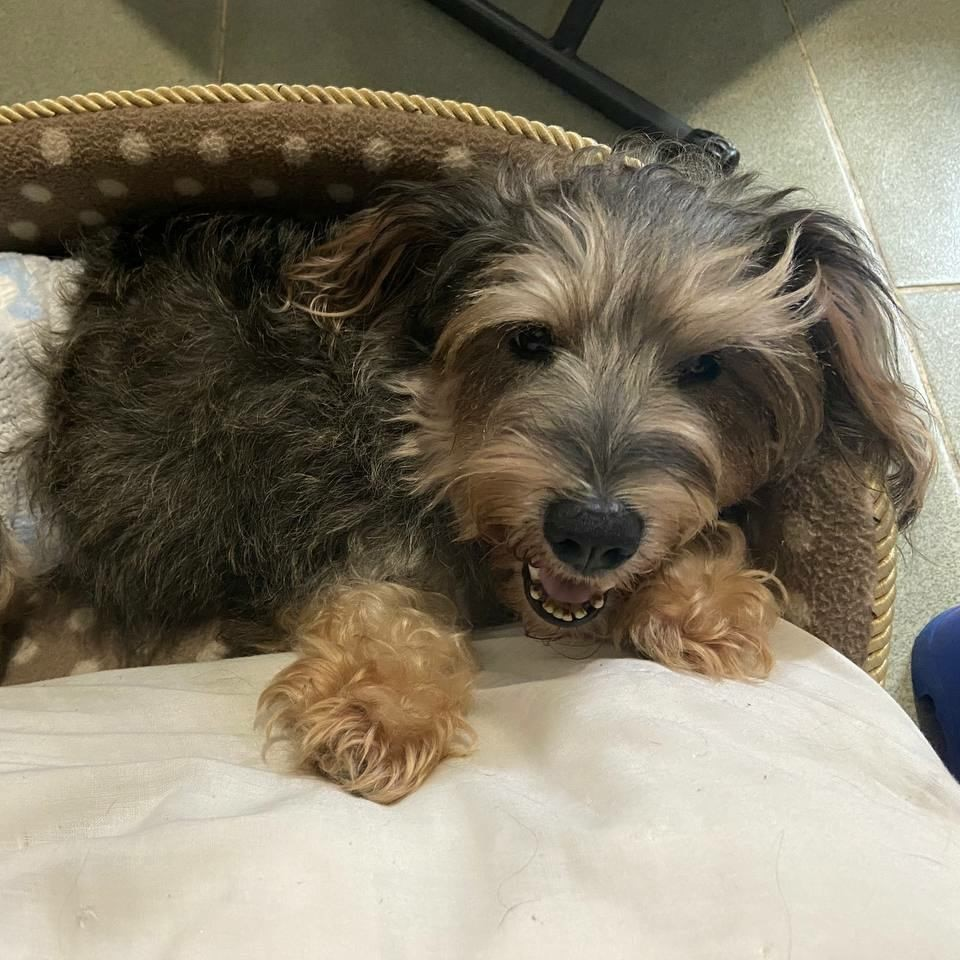
MIMI - March 6, 2021
Mimi was a Senior Dog who was rescued from the streets after being abandoned by her previous owners. She had to undergo surgery to remove a large kidney stone. Luckily, the surgery was successful and she was adopted by a Pawssion Volunteer. Unfortunately, she did not make it and passed away peacefully in her sleep. We like to think that she just wanted to say goodbye to her new Fur Momma, who was also the reason why we were able to rescue her. She was buried at our Bulacan Shelter, where she will always be with her new family.
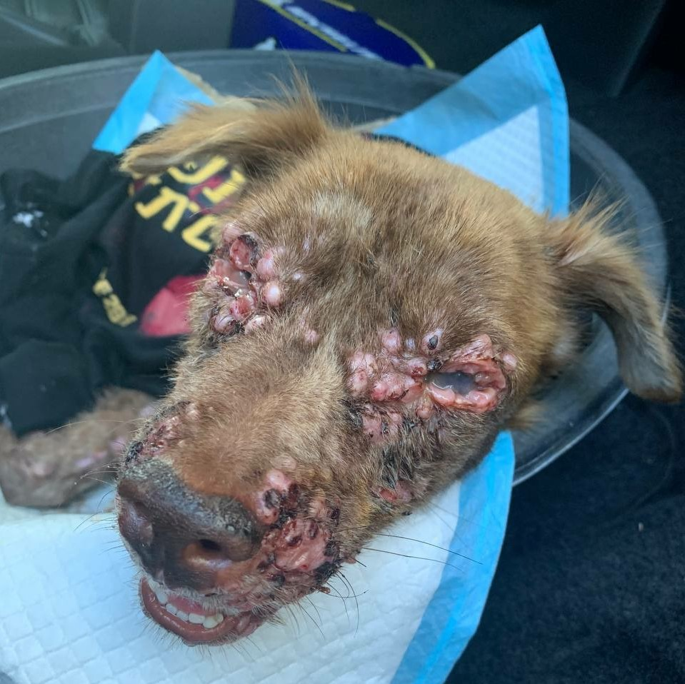
JASON - March 24, 2021
Jason was an Adult Dog who was rescued from the streets at 1AM in the morning with the help of his reporter, Ms. Rhea, our very dedicated volunteers and his namesake Grab driver, Kuya Jason. He was such in a bad condition, requiring emergency vet attention, for 3 full days prior to being rescued. His was a severe case of TVT, it was already all over his body and he tested positive for erlichia. He fought ’til the end: he was even revived 3 times but it was already his time to enjoy dog heaven. He lost his battle but we gave him a fighting chance. We assured him he was loved.
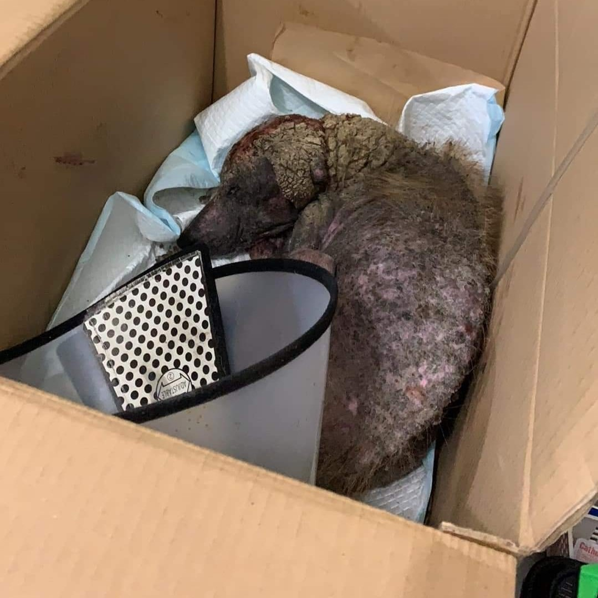
SONNY - March 29, 2021
We rescued Sonny from the streets despite being overwhelmed with numerous new rescues. Unfortunately, upon being brought to the vet, he had infections, a skin problem, and tested positive for Distemper. We had to confine him in a Distemper Clinic and still hoped to find him a Foster Home. We also already had Sponsors who immediately pledged for him to at least help with the vet bills. But God had other plans and He needed another angel. He collapsed and the clinic still tried to revive him, but ultimately his body gave up. He was buried at our Bulacan Shelter, where at least he finally has a place to call his home.
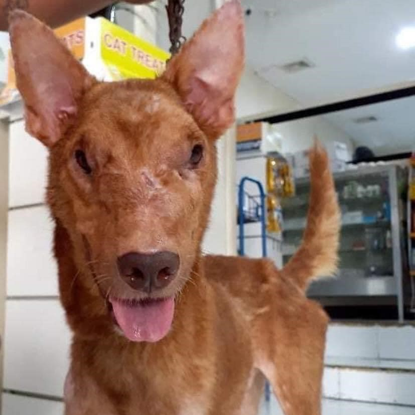
SHAW - March 29, 2021
One of our favorite rescues, one of the ultimate symbols of hope, Shaw, also crossed the rainbow bridge. He was a stray rescued by T. Nelly last year. He had a tumor on his face and even tested positive for Distemper. But with care, love and difficult but successful chemo sessions, Shaw found his smile again after the tumor was gone. He was adopted by his foster parent, Kuya James, and was loved for more than a year. We still don’t know what caused his death, but all we know is that God has better plans and maybe, just maybe, Shaw gave way for the 2 puppies Kuya James rescued and sacrificed his life instead.
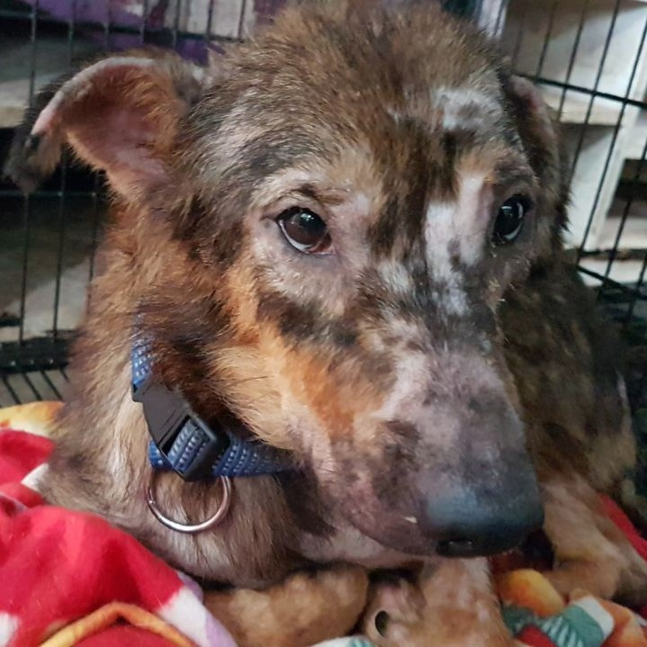
POTCHI - April 14, 2021
Potchi was a senior dog and was a stray for most of her life. She was sweet and loving, but struggling, alone and homeless. She was reposted for help but no one stepped up to give her a chance. Potchi was really sick: she was anemic, had sarcoptic mange and tested positive for Ehrlichiosis. But after dedicated care in the Bulacan Shelter, she bloomed into a healthier and more content version of herself. Unfortunately, she wasn’t long for the world anymore and passed quietly in her sleep. But at least we know that in the end, she had a family and found a place she could call her home.
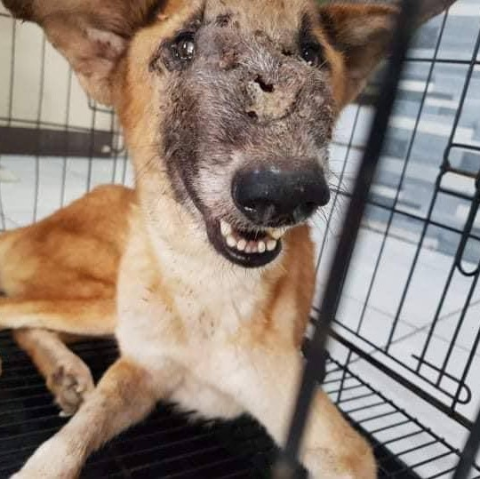
HYBLU - April 15, 2021
The team travelled all the way to Rizal to rescue Hyblu. Her tumor had grown so big that it already covered her whole face, but she remained a calm and gentle dog. After several chemo sessions, the future was looking really bright for our dear Hyblu: she started smiling again and we finally saw her beautiful eyes! Unfortunately, her sickness resulted in complications with her breathing, and ultimately, Hyblu passed away in her sleep. But we are comforted by the fact that she left this world knowing people never gave up on her, and that they gave her a chance to see the world clearly once again.
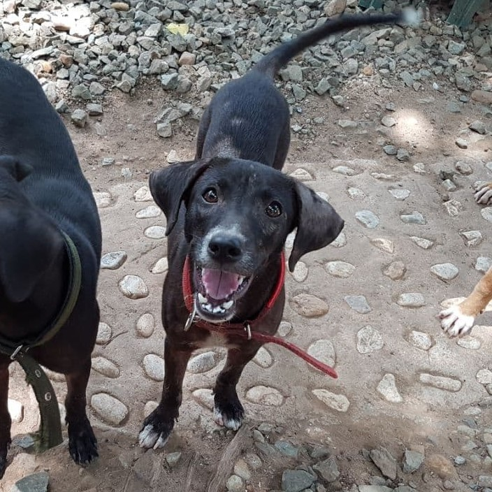
PARK - April 22, 2021
Park was rescued from Caloocan, along with her fur-mom, Cali and her fur-sister, Sparky, after employees from Top Up Philippines reported them. Park was a little sick and weak at first, but after just a few days in the shelter, her true personality came out. She was such a bundle of joy and energy and was inseparable from her sister, Sparky. But tragedy struck and Park suddenly got sick from Distemper. The team rushed her to a Distemper Clinic but the illness took hold too fast, and they were not able to save her. We had high hopes for Park, but at least in the end, she found a family and home that showed her she was worthy.
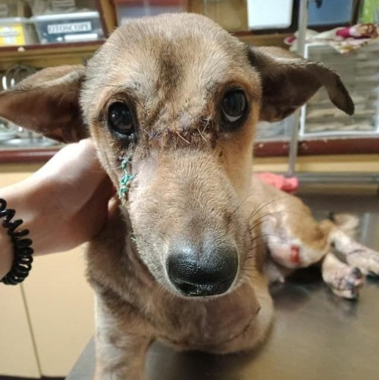
SAKANG - April 27, 2021
Sakang was our dear fighter: she held on for as long as she could for us. Her wounds and fractures were fatal. She had a severe infection due to Pyometra. There was a small chance she would even survive the operations. In spite of all the risks, we took the chance and said yes to saving her. She was our miracle. We were really looking forward for her recovery, her new fur-ever home was already waiting for her. But God had other plans. To our dear Sakang, thank you for fighting for us and for being a symbol of hope. Know that your life will not be put in vain. We will keep fighting for all the abused and neglected animals.
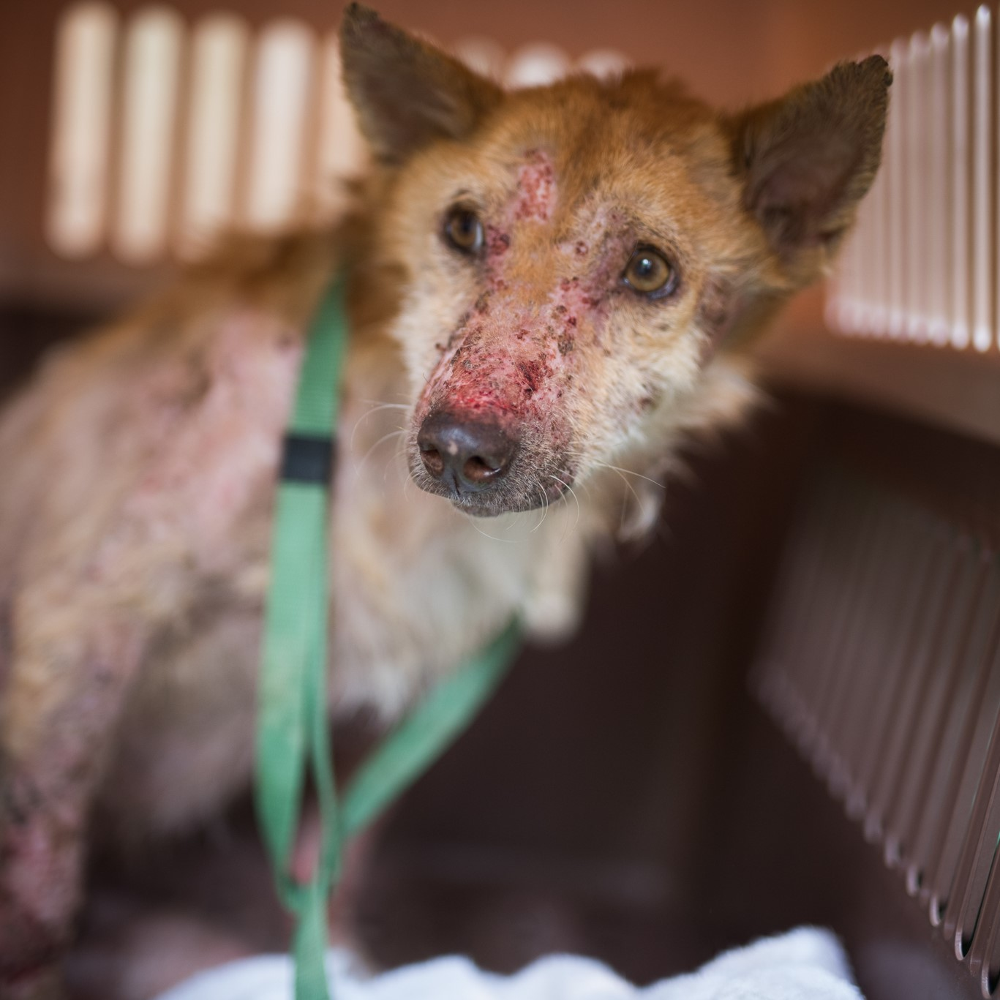
PANDAK - April 29, 2021
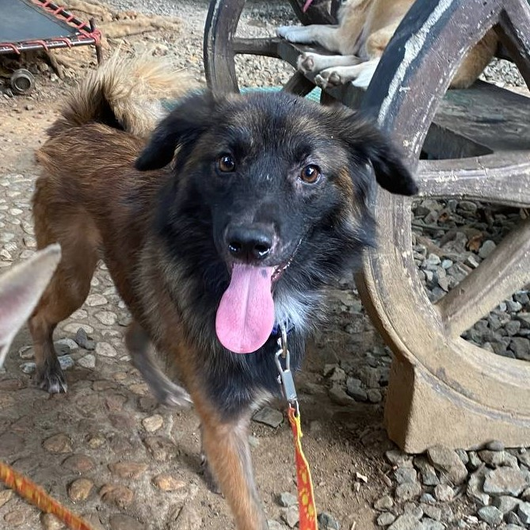
SHADOW - May 21, 2021
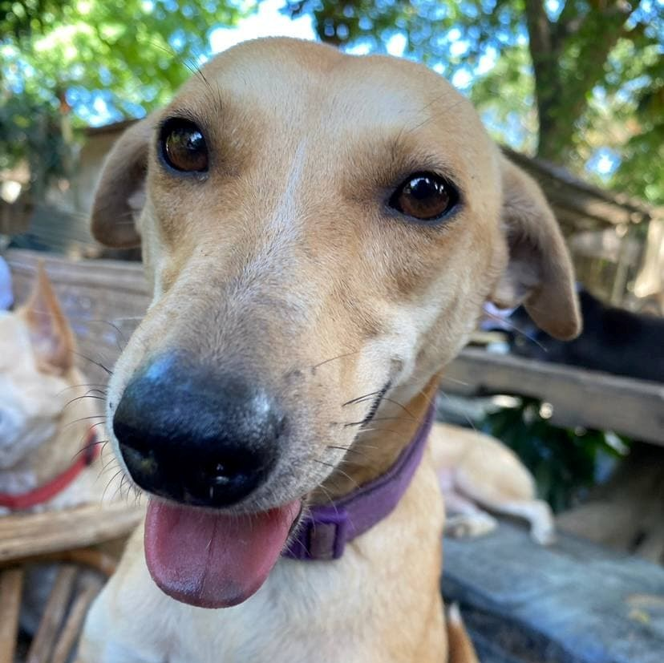
EMMA - August 25, 2021
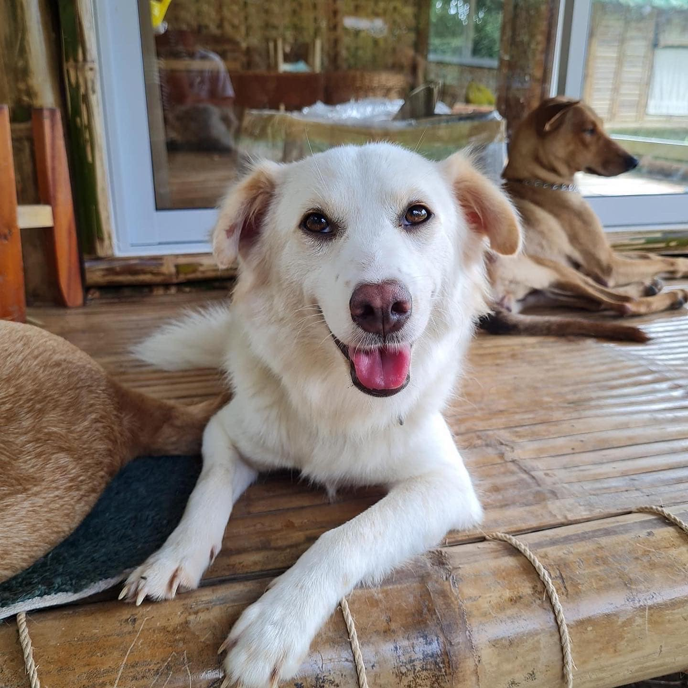
COBE - October 23, 2021
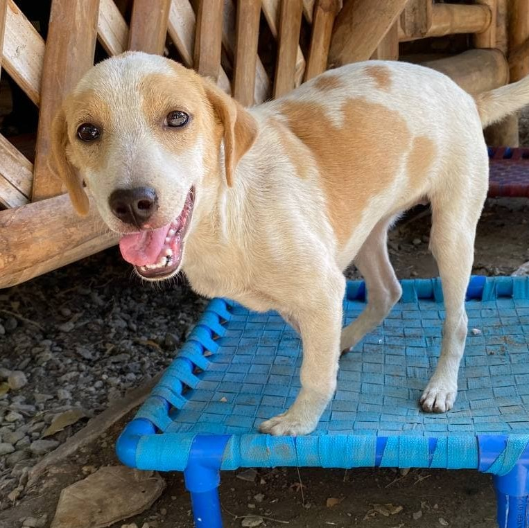
APPLE - October 23, 2021
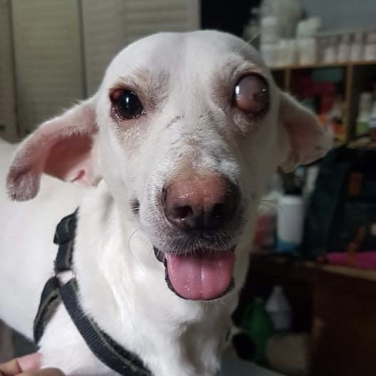
WHITEY - November 23, 2021
{kind=link}
{kind=link}
{kind=link}
{kind=link}
{kind=link}
{kind=link}
{kind=link}
{kind=link}
{kind=link}
{kind=link}
{kind=link}
{kind=link}
{kind=link}
{kind=link}
{kind=link}
{kind=link}